CSEDS
One name, three businesses, and a website that had to admit it.
At a glance
0
Page templates
0
Business lines they carry
0+
Years of catalogue
From raw materials to finished products.
Summary
CSEDS Australia has been engineering since 1991. Somewhere in those thirty years it quietly became three companies.
A consulting practice. A supplier of construction products — Barchip, TrueGrid, TripStop, Prestige Modular. And the Australian distribution channel for a shelf of international engineering analysis software. One name over all three, one website trying to carry them.
I designed that website: a landing page, a product template, a software template, and the mobile pass — working directly with the founder.
The problem
Three audiences who want completely different things, arriving at the same front door.
A council engineer specifying a trip-hazard product, a builder pricing modular accommodation, and a structural engineer buying a non-linear FEA licence have nothing in common except the company they've landed on.
Flatten them into one voice and every visitor reads something written for somebody else. Split them into three sites and a thirty-year-old firm looks like three small ones. The site had to do both at once.
Who it's for
- Consulting
- Councils and developers who need an engineer, not a catalogue. Sells on judgement and thirty years of it.
- Products
- Specifiers and builders. Wants compliance ratings, load data and a datasheet — fast.
- Software
- Practising engineers buying licences. Wants to know the tool is supported locally by someone who uses it.
Each one gets its own colour and its own page template. Everything else — grid, type, nav, the // SINCE 1991 // stamp, the quote button — is identical across all three.
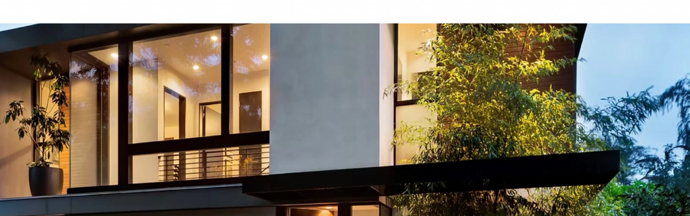
The mechanism
One shell. Change exactly one variable.
Every template shares the same header, the same left-aligned display type, the same pill label, the same feature list with its check marks, the same footer. The only thing that moves between them is the accent — steel blue for products, oxide red for software.
It is a small move and it does a lot of work. A visitor two scrolls into the software page knows they are somewhere specific without being told, and a visitor moving between sections never feels like they have left the company.
The two versions that lost
Both alternatives were real options, and both fail for a reason worth drawing.
The landing page
The front door has to answer "what is this company" before it sells anything. So it opens on the founder — thirty years, on camera, saying good engineering isn't about the cheapest spec — and only then lists what CSEDS supplies.

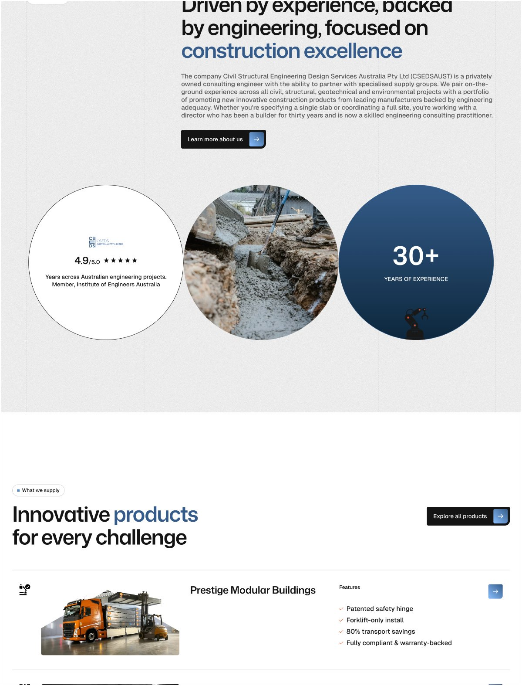
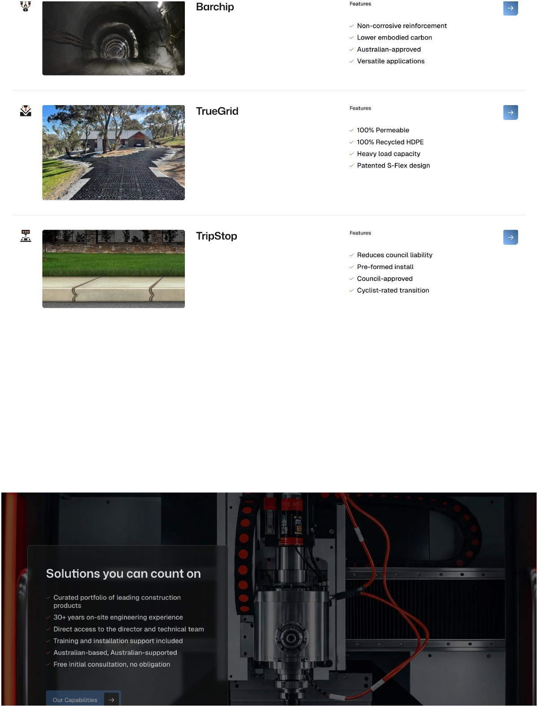
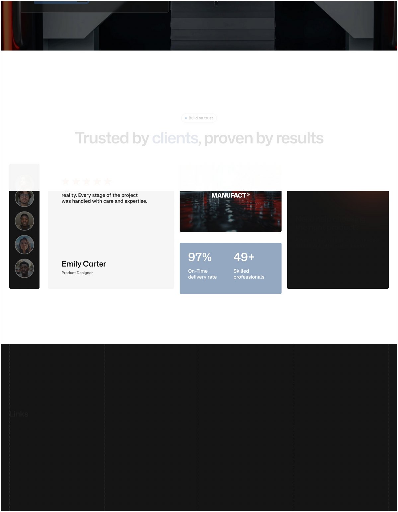
One row per product
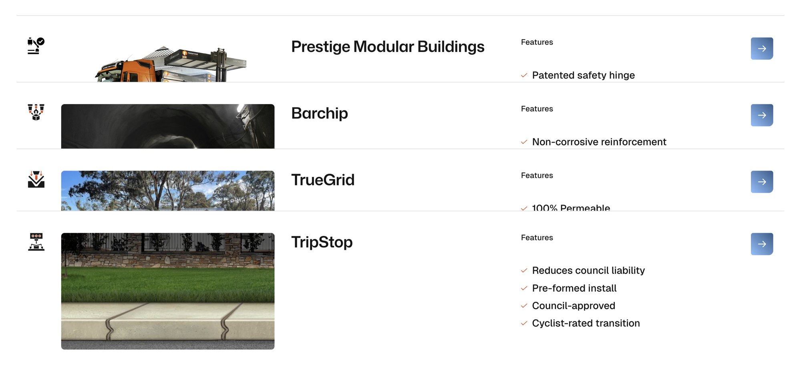
The product template
A specifier arrives already knowing what they want. So the template front-loads the compliance claim — BAL-FZ, the highest bushfire attack level — then gives them the assembly table, the workflow, and the questions they were going to email anyway.

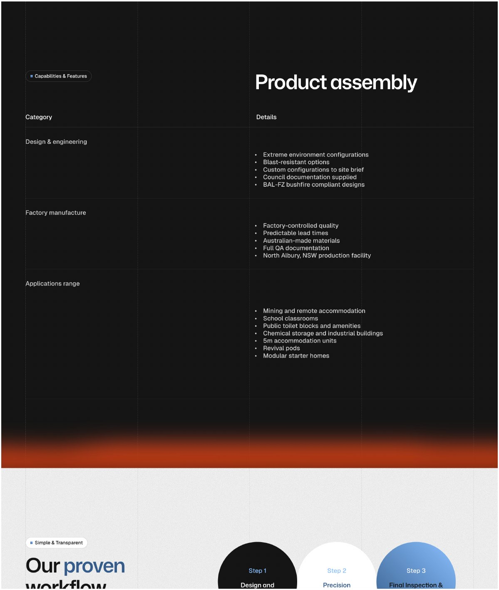
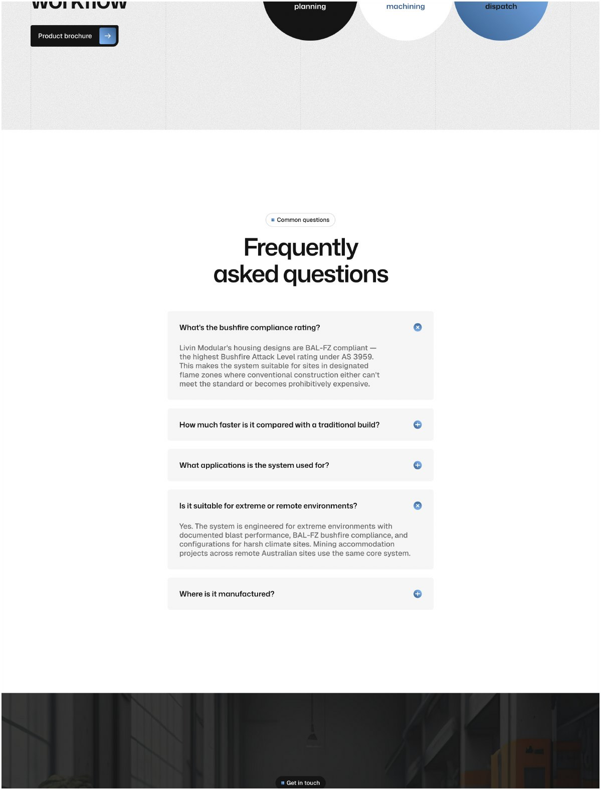
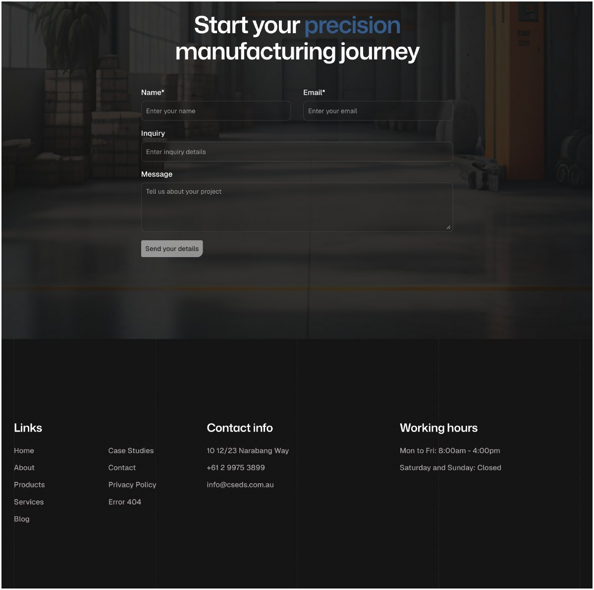
The software template
Same shell. One variable moved.
The accent goes oxide red and the subject changes to ATENA, CivilGeo and DeepExcavation — but the grid, the type scale, the feature lists and the footer are the products template, untouched. Nothing was redesigned to make this page; a value was changed.

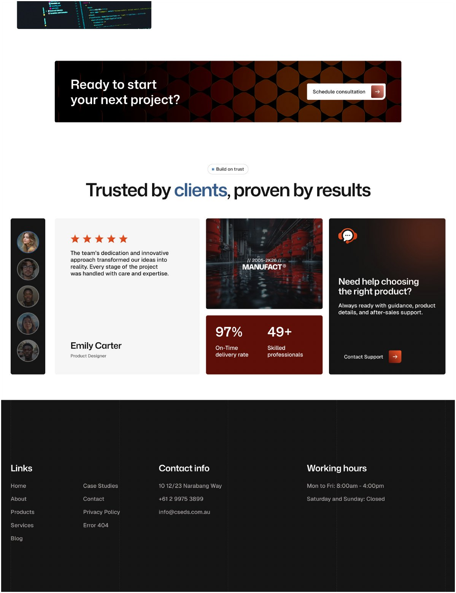
Mobile
Most of the traffic is a specifier on a site with one hand free. The feature lists stack, the spec table becomes a single column, and the quote button stays reachable — the hierarchy survives the narrow measure because it was never carried by the layout.
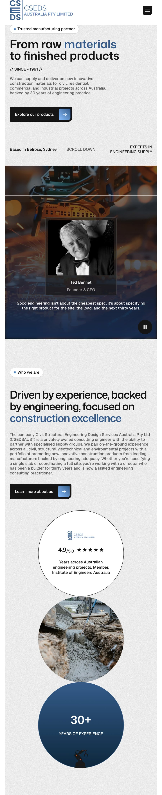
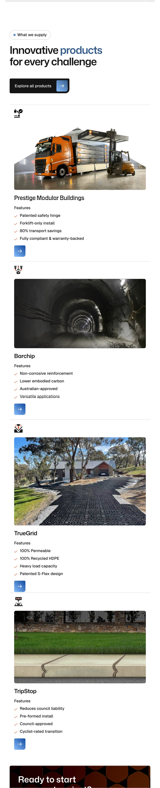
12 The same page, one hand free
The outcome
It is live at csedsaust.com.au, and the next product does not need me.
That was the actual brief underneath the stated one. A firm that has spent thirty years adding things to its catalogue will keep adding things to it, and the test of this work is not how the launch looked — it is whether the fifth product page can be made by someone who was never in the room.
I designed and built it. That is the reason the template argument is more than a diagram: the thing that had to survive contact with a real build was a rule I had to implement myself, so there was nowhere for a nice idea to hide.
What this case study doesn't have
No before-and-after traffic, no enquiry numbers, and no user testing. I also don't have a capture of the old site, so the "before" here is described rather than shown. The strongest evidence I can offer is that the site is live and you can go and use it.
The part I'd push harder next time is the consulting line. It got the shell and the grid, but not the same argument the other two got — it sells on judgement, and judgement is the hardest thing to put in a feature list.
Live at csedsaust.com.au